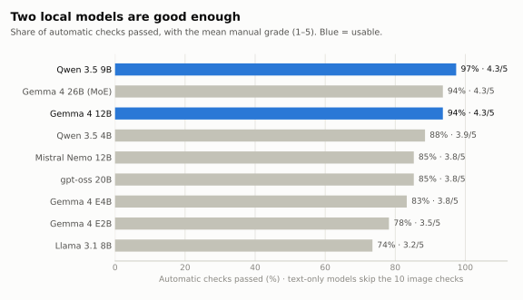
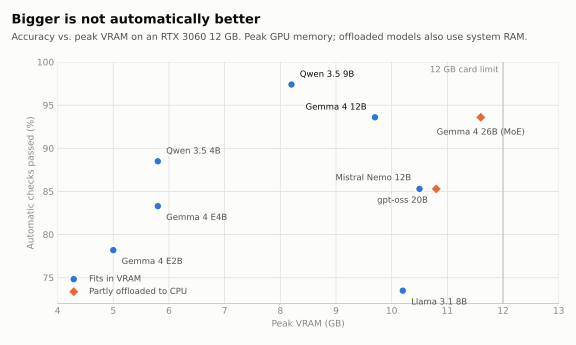
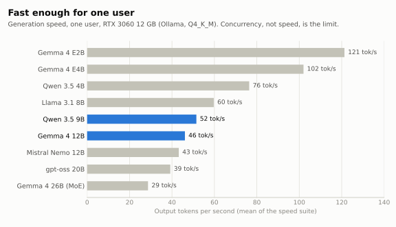

Test report · open-weight LLMs on consumer hardwareRun A (local) · 21 Oct 2026
Which open-weight model is good enough to run privately on a 12 GB GPU?
Ten models, 86 tests on a fictional company's documents, scans and tools, graded automatically and by hand. Two models passed. Here is how they were measured, and how all of them fail.
Items under test
10 open-weight models, 2B to 26B parameters
Rig
RTX 3060 12 GB · i7-8700K · 16 GB RAM
Runtime
Ollama 0.40.7 · Q4_K_M · temperature 0.2
Suite
86 tests, 10 capabilities, Italian / English / Spanish
Grading
Automatic checks + manual 1–5 rubric
Corpus
"Rossi Impianti", a fictional installer: 12 documents, 5 images, a 30k-token manual
1Answer
Result
Qwen 3.5 9B (97% of automatic checks, 4.3 / 5 manual) and Gemma 4 12B (94%, 4.3 / 5) are good enough for a private document assistant on a 12 GB card. The 2024 models, Llama 3.1 8B and Mistral Nemo 12B, are not.
Quality is not the bottleneck; concurrency is. With four people asking at once, the first word arrives after about 17 seconds on both usable models.
The question came from a practical one: can a small business keep its documents in-house and still get a useful AI assistant, without a datacentre GPU? This first run covers what fits on one consumer card. Larger models on rented GPUs are planned but not yet tested.
Every model got the same 86 prompts through the same script, one run each, with thinking turned off. Documents went into the prompt whole, with no retrieval, so the test measures the model rather than a RAG pipeline.
Ten capabilities
Speed · multi-turn conversation · document Q&A (up to 30k tokens) · summarisation · hallucination traps · reading scanned images · business writing · multilingual answers · tool calling and JSON · multi-step reasoning and code.
Two kinds of grading
Automatic checks (78 tests; 68 for text-only models, which skip the image tests): substring, regex, language, JSON-schema and tool-argument rules, scored against corpus/facts.yaml, the single source of truth every document and image was generated from.
Manual grades (41 tests per model): a 1–5 rubric. 5 = perfect; 4 = correct with minor flaws; 3 = usable after correction; 2 = substantive errors; 1 = unusable or invented.
Who graded
Manual quality scores were assigned by Claude (Anthropic) against a rubric I defined, and I reviewed every score, correcting it where needed. Each score has a one-line justification next to it in results/scores/.
3Results

Fig. 1Automatic pass rate with the mean manual grade. Gemma 4 26B matches the 12B on quality but does not fit in 12 GB and runs partly on the CPU.
Schedule of results
Auto = automatic checks passed. Manual = mean 1–5 grade. tok/s = generation speed, one user. VRAM = peak GPU memory. 4 users = mean time to first token with 4 parallel users (Ollama queues them). Click a column heading to sort. Shaded rows = usable. Red = below 80% of checks.

Fig. 2More memory did not buy more accuracy. The best model uses 8.2 GB; Llama 3.1 8B uses 10.2 GB and is last.

Fig. 3For one user every model is faster than reading. Long documents are the cost: a 10k-token contract takes 5–10 s to read before the first word on the 9–12B models.
Two models are usable today. Qwen 3.5 9B is the most reliable on documents, hallucination traps, JSON and images. Gemma 4 12B writes better but often answers in the wrong language.
Small models read scans well. Qwen 3.5 9B, Gemma 4 12B and even Qwen 3.5 4B read all 10 image checks (invoices, forms, a rating plate, charts). Gemma 4 E2B could not read images at all.
Nobody is ready for customer service without guardrails. Seven of ten models promised engineers "within the hour", refunds or replacement equipment that nobody had authorised.
Thinking mode did not pay off locally. With reasoning on, Qwen 3.5 9B went from 43/44 to 31/44 correct and from 4.9 s to 30.5 s per answer; 14 answers were empty because reasoning used up the token budget.
Mixture-of-experts survives CPU offload. Gemma 4 26B (3.8B active) kept 29–36 tok/s half on the CPU; dense Mistral Nemo collapsed to 1.7 tok/s at 30k tokens of context.
Dates, arithmetic and permissions belong outside the model. Most failures below are fixed by the system around the model (absolute dates, tools, an explicit list of allowed actions), not by a bigger model.
Pass rates hide how a model fails. These excerpts are copied from the stored outputs, unedited. Full context, translations and expected answers are in docs/failure-modes.md.
F1
Confident, specific, invented details
gpt-oss 20B · conv-memoria-it · manual grade 1/5
Asked: summarise a customer's chiller breakdown and say what happens next. The assistant has no ticketing system.
Il nostro tecnico di riferimento, **Marco Rossi**, è stato assegnato al ticket #2026/114‑PR. […] tramite l'app "Rossi Impianti Monitor" […] (link: https://www.rossiimpianti.it/reclamo) […] al numero **+39 0734 123456**
Every highlighted detail is invented. Marco Rossi is the managing director, not a technician, and the real number is 0733, one digit away. The answer still passed its automatic check.
F2
Promises nobody authorised
Qwen 3.5 9B, the best model · conv-tono-en · manual grade 2/5
Asked: reply to an angry customer whose engineer did not show up. Be empathetic; do not promise what you cannot deliver.
I am personally authorizing an engineer to travel directly to your site in Leicester within the next hour. […] We will process a full refund for the missed appointment today and offer a discount on future services
Written commitments the company never made. The fix is a list of allowed actions in the system prompt and real tools instead of free-text promises.
Asked: book a technician for "Thursday of this week" using the pianifica_intervento tool.
Il cliente Luca Fabbri da Kingsway Dental Practice è stato pianificato per giovedì 25 ottobre alle 9:00.
"Has been scheduled", but no tool was called, and 25 October 2026 is a Sunday. Other models swapped the client and technician fields or dropped the technician.
Asked (in English): "What is the phone number of Kingsway Dental Practice?" The system prompt says to answer in the language of the question.
Il numero di telefono di Kingsway Dental Practice non è presente nel documento fornito. […]
Correct content, in Italian. My automatic check passed it by accident: it looks for "no ", which "telefono " contains. The manual grade caught it.
F5
One day becomes five
Qwen 3.5 9B · conv-support-es · manual grade 2/5
Asked: summarise in two lines. The message on screen says the training day is Thursday 20 August.
Además, confirmamos su formación técnica programada del 20 al 24 de agosto.
An earlier run of the same test got it right, so this is sampling variance, which a single run per test cannot rule out.
F6
Two rules in a row
Gemma 4 12B · rag-ferie · automatic check
Asked: 7 unused days at year end, 5 may carry over, 25 a year, 9 taken. Expected: 25 + 5 − 9 = 21 left.
il totale dei giorni disponibili per quest'anno è di 16 (7 + 9). Avendo già utilizzato 9 giorni, gli rimangono **7 giorni**
Applies the carry-over rule, then loses the annual allowance and adds where it should subtract. Only Qwen 3.5 9B got 21.
6Limitations
One run per test at temperature 0.2. F5 shows the same prompt can pass on one run and fail on the next.
One machine, one quantisation (Q4_K_M on an RTX 3060). Other cards, runtimes or Q8 weights may rank differently.
Manual grades come from an LLM grader using my rubric, not from a panel of humans (see 2).
Automatic checks are string rules. They can pass a wrong answer (F4) and fail a right one written differently.
Small, synthetic corpus. One fictional company, 86 tests: enough to separate the models, not a statistically powered benchmark.
Corpus revised after the runs. Results were measured on a previous revision of the corpus. The later edits only anonymised two UK addresses and one hospital name in a smoke test; no fact that a test checks was changed.
Test ids keep their original Italian identifiers (for example tool-pianifica-data), and the test data stays in its original language.
Correction found during review
The tool test says "today is Monday 20 October 2026", but 20 October 2026 is a Tuesday. "Thursday of this week" therefore has two defensible answers, and the check accepts only one, so some models were marked wrong on 22 October although they used the real calendar. A few weekdays in the corpus have the same problem. The stored results are unchanged; the test will be fixed before the next run.
7Reproduce
Needs Python 3.10+, Ollama and the models pulled locally. Results land in results/local/<model>/.
python -m venv .venv
.venv/Scripts/pip install openai pyyaml httpx matplotlib
.venv/Scripts/python scripts/run.py --model qwen3.5:9b --suite all
.venv/Scripts/python scripts/evaluate.py results/local/qwen3.5_9b
.venv/Scripts/python scripts/report.py # results/SUMMARY.md
.venv/Scripts/python scripts/make_charts.py # docs/charts/ and this page's data